Field guide library
Fifteen articles, each built as a decision tool.
Every guide has a unique hero image, section infographics, article quotes, and links into the rest of the system. This is where the blog section lives.
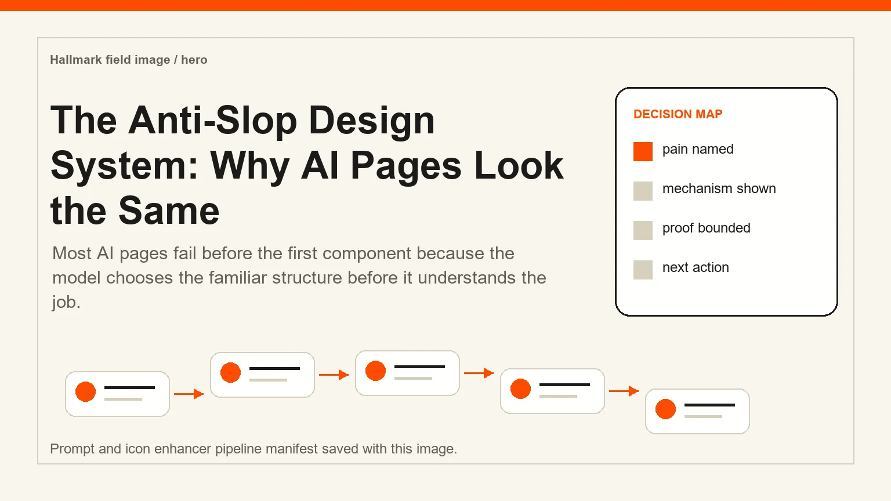
Design StrategyThe Anti-Slop Design System: Why AI Pages Look the SameMost AI pages fail before the first component because the model chooses the familiar structure before it understands the job.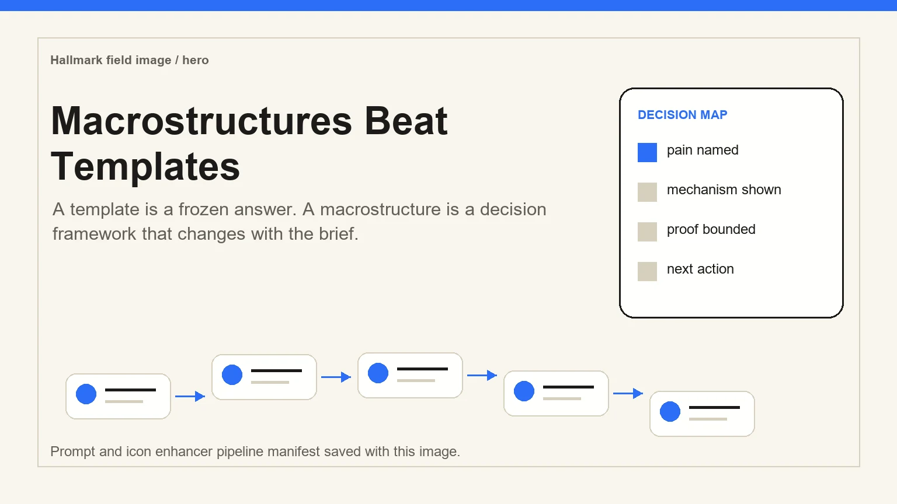
StructureMacrostructures Beat TemplatesA template is a frozen answer. A macrostructure is a decision framework that changes with the brief.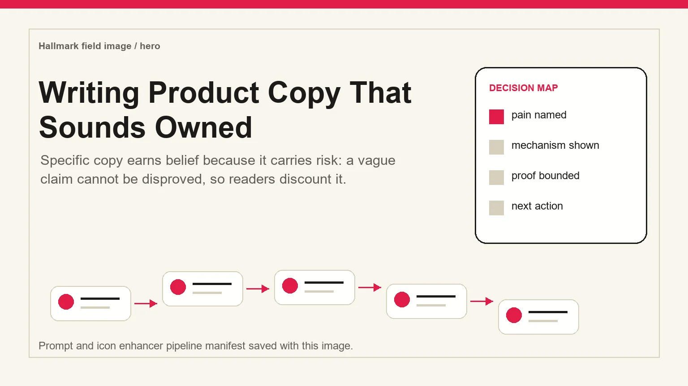
CopyWriting Product Copy That Sounds OwnedSpecific copy earns belief because it carries risk: a vague claim cannot be disproved, so readers discount it.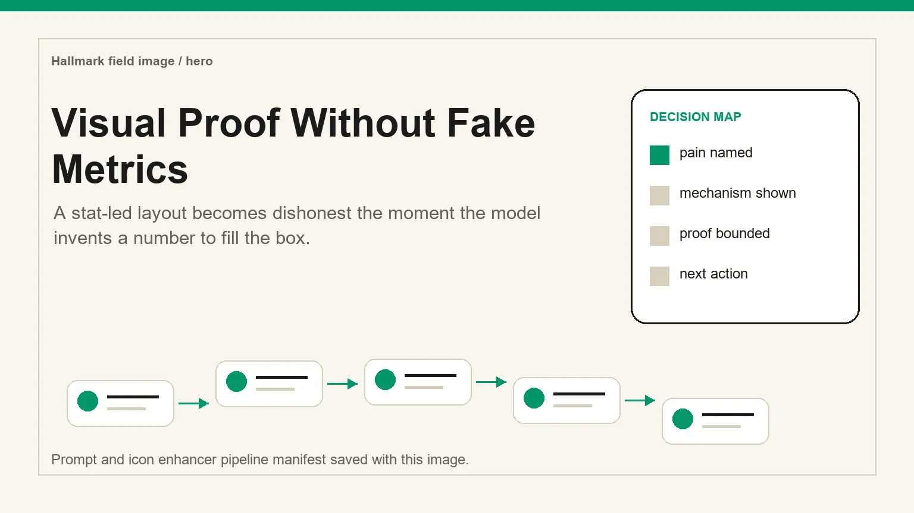
ProofVisual Proof Without Fake MetricsA stat-led layout becomes dishonest the moment the model invents a number to fill the box.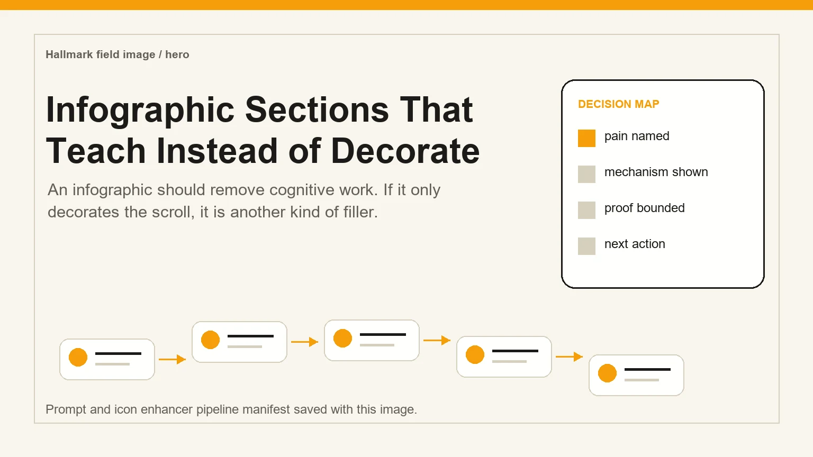
InfographicsInfographic Sections That Teach Instead of DecorateAn infographic should remove cognitive work. If it only decorates the scroll, it is another kind of filler. QAA Chrome DevTools Visual Pass for Static SitesA static site can compile and still fail at the viewport where the buyer actually reads it.
QAA Chrome DevTools Visual Pass for Static SitesA static site can compile and still fail at the viewport where the buyer actually reads it.
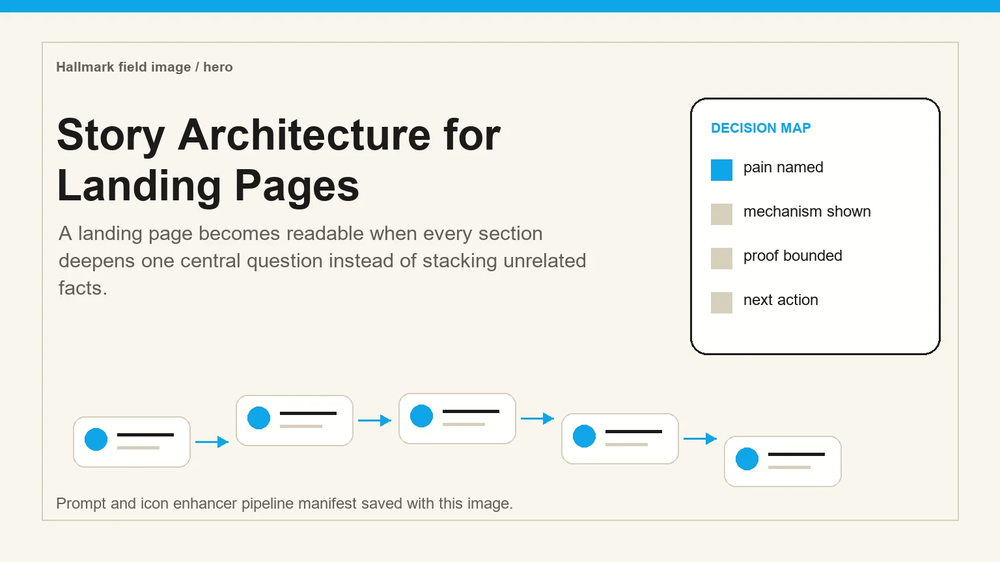
StoryStory Architecture for Landing PagesA landing page becomes readable when every section deepens one central question instead of stacking unrelated facts.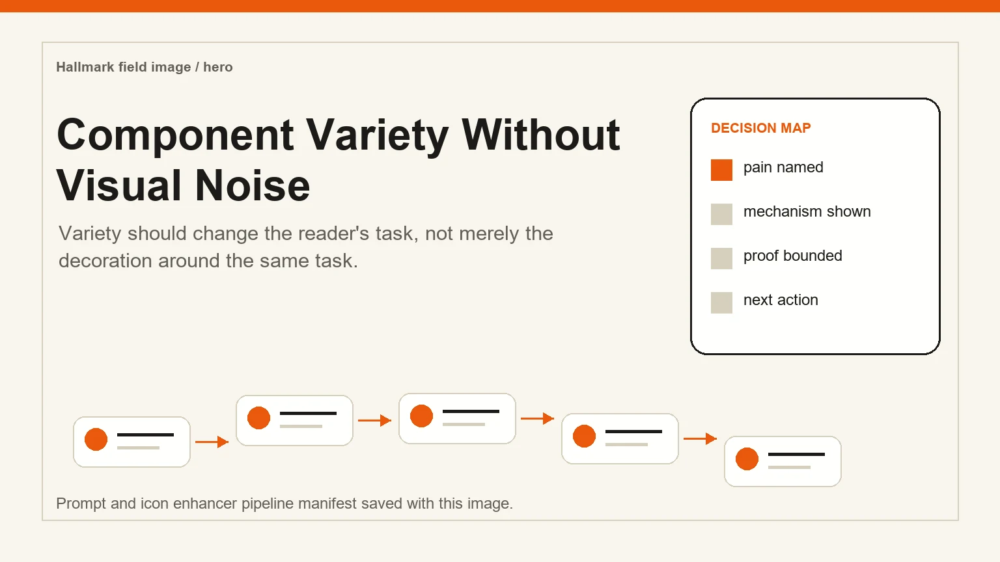
ComponentsComponent Variety Without Visual NoiseVariety should change the reader's task, not merely the decoration around the same task.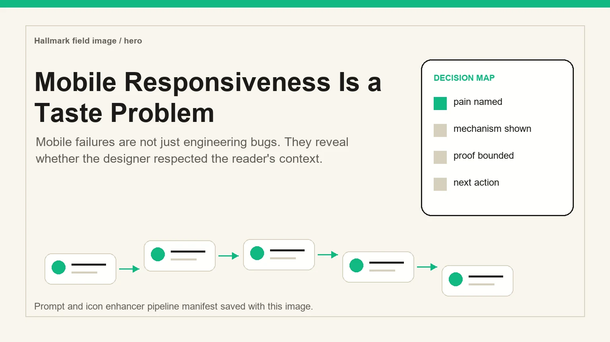
ResponsiveMobile Responsiveness Is a Taste ProblemMobile failures are not just engineering bugs. They reveal whether the designer respected the reader's context.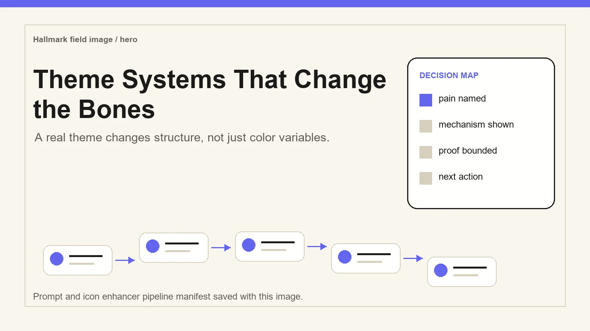
ThemesTheme Systems That Change the BonesA real theme changes structure, not just color variables.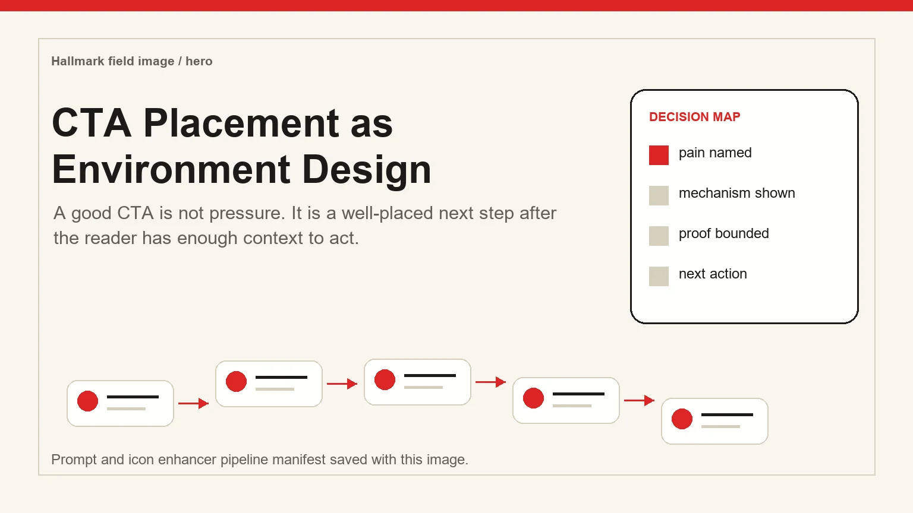
ConversionCTA Placement as Environment DesignA good CTA is not pressure. It is a well-placed next step after the reader has enough context to act.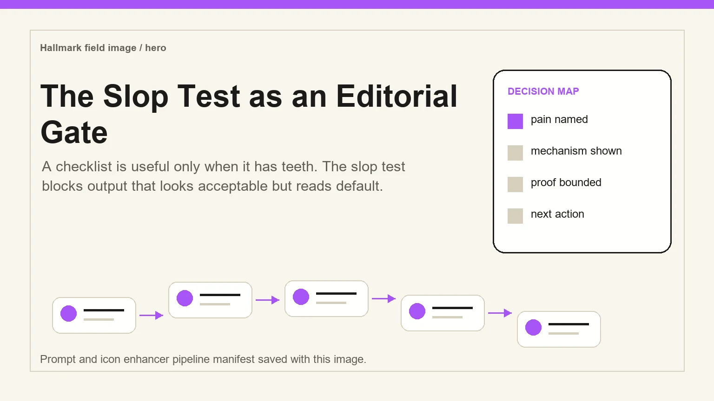
QualityThe Slop Test as an Editorial GateA checklist is useful only when it has teeth. The slop test blocks output that looks acceptable but reads default.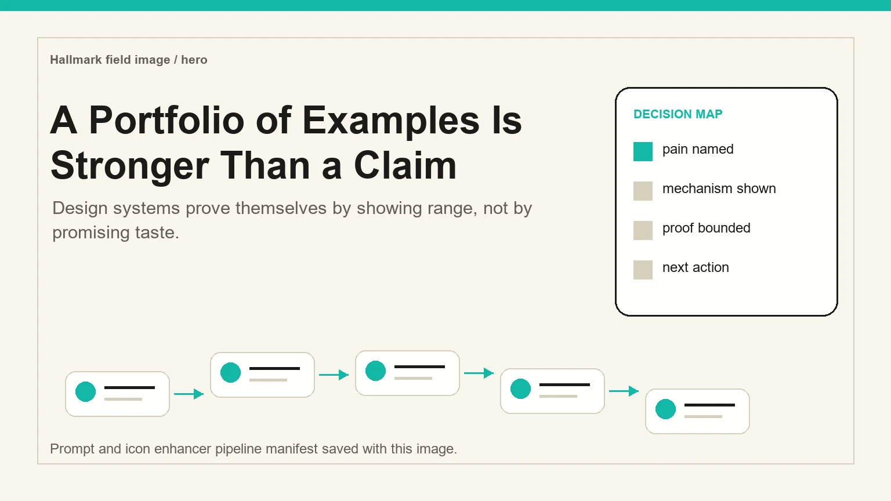
ExamplesA Portfolio of Examples Is Stronger Than a ClaimDesign systems prove themselves by showing range, not by promising taste.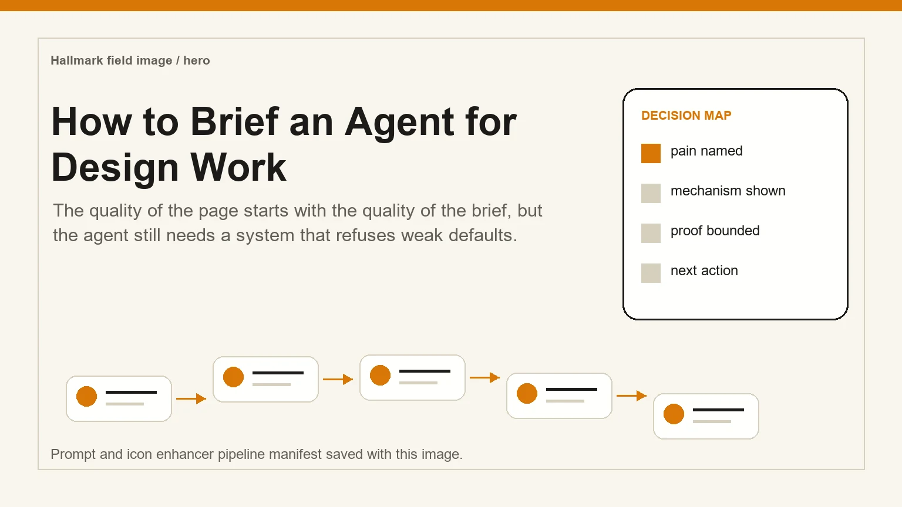
WorkflowHow to Brief an Agent for Design WorkThe quality of the page starts with the quality of the brief, but the agent still needs a system that refuses weak defaults.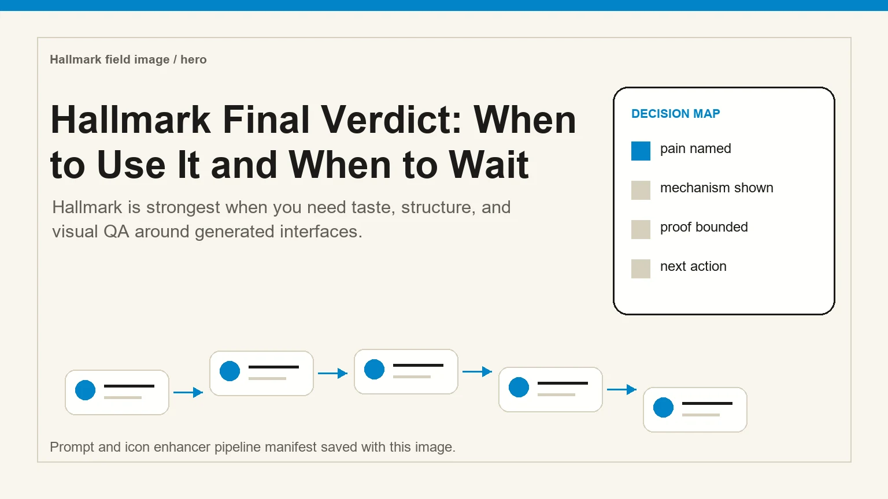
VerdictHallmark Final Verdict: When to Use It and When to WaitHallmark is strongest when you need taste, structure, and visual QA around generated interfaces.